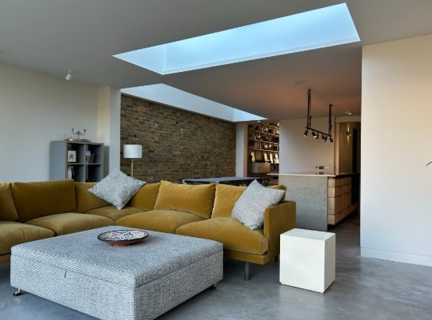

Selected Work
All Work →
London-trained architect based in Galicia, available across the UK — extensions, whole-house refurbishments, basement conversions, and listed buildings.


ARB-registered architect with experience in residential refurbishment, extensions, basement conversions, and listed buildings at Emrys Architects and Robert Barnes Architects in London. Based in Galicia since 2026, available for UK projects throughout the year — site visits monthly, remote design and coordination ongoing.
Whether you're planning a project or want to understand your options — the first conversation is always free.